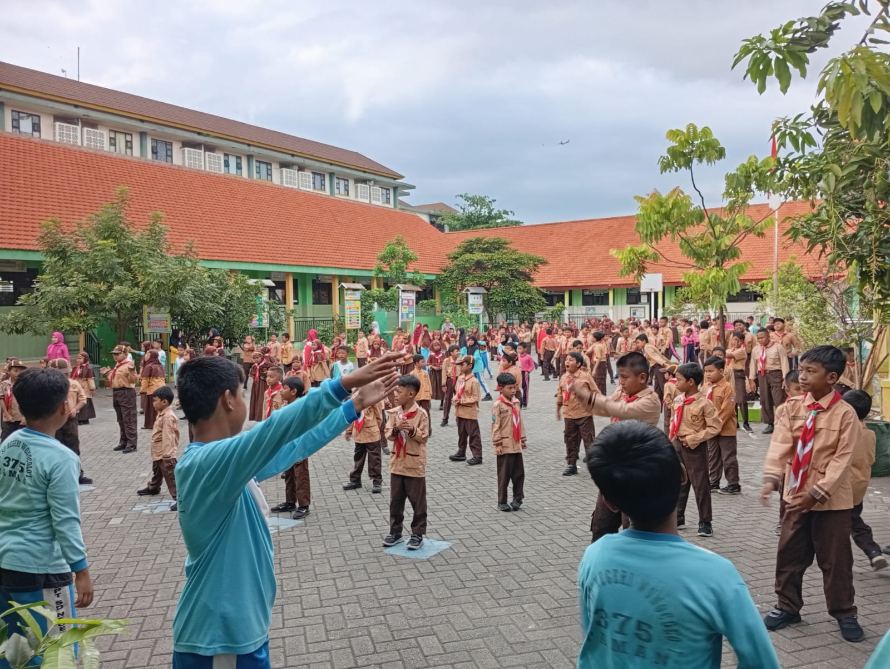

KEGIATAN SENAM JUM'AT SEHAT SELURUH SISWA DAN GURU
Tanggal: 23 Mei 2025
Setiap hari Jumat pagi, seluruh siswa dan guru SDN Wonocolo 1 melaksanakan kegiatan Senam Jum'at Sehat yang rutin dilaksanakan di halaman sekolah. Kegiatan ini dimulai pukul 07.00 WIB dengan dipandu oleh guru olahraga atau instruktur senam yang diundang khusus. Seluruh siswa dari kelas 1 hingga kelas 6, serta para guru dan staf sekolah, mengikuti senam dengan antusias dan semangat. Musik yang enerjik dan gerakan yang variatif menambah semarak suasana, menjadikan senam sebagai momen yang dinanti-nantikan setiap minggunya.
Tujuan utama dari kegiatan ini adalah untuk menjaga kebugaran jasmani dan meningkatkan kesadaran akan pentingnya hidup sehat sejak dini. Dengan rutin berolahraga, diharapkan siswa memiliki daya tahan tubuh yang lebih baik, konsentrasi belajar yang meningkat, serta semangat positif dalam menjalani aktivitas harian di sekolah. Selain itu, melalui kegiatan bersama ini, terjalin pula kebersamaan dan kekompakan antara siswa dan guru.
Senam Jum’at Sehat juga menjadi sarana edukasi bagi siswa dalam menerapkan gaya hidup sehat secara menyenangkan. Kegiatan ini sering diselingi dengan pesan-pesan kesehatan, seperti pentingnya sarapan, minum air putih, dan menjaga kebersihan diri. Dengan konsistensi pelaksanaan dan dukungan dari seluruh warga sekolah, Senam Jum’at Sehat telah menjadi bagian dari budaya sehat yang tumbuh dan berkembang di SDN Wonocolo 1. ← Kembali ke daftar berita